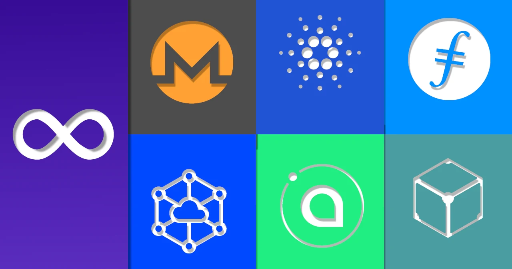

The crypto currencies that matter
Updated on: February 23 - 2025
Sort of. I don't really understand theming and don't particularly care about it. Which is why in this tutorial I won't theme plasma at all. I will just attempt to create a mix between Unity and the current GNOME Ubuntu uses, via KDE Plasma. That's really strange but it works really well.
If you're wondering why is there no script just like Tsubuntu, the simple reason is that Plasma scripting makes no sense to me. Tested on Kubuntu 24.04.
Setting up the layout
I will assume that you aren't blind and that's why I won't be describing every detail. You can see the items on the panels and how they are arranged.
Top panel
Unity had the clock and notifications on the right. I like them in the middle.

Side panel

Other functionality
Hide title bar on maximize
Totally optional but this saves some space on your screen, and it just makes sense to me. In Unity maximizing an app would bring the close, maximize and minimize buttons to the top bar which is not possible on KDE without the use of some outdated extension. So I won't be doing that.
Open
~/.config/kwinrc
Find the section [Windows] and add BorderlessMaximizedWindows=true under it. It should look something like this:
[Windows]
BorderlessMaximizedWindows=true
Workspaces
By default they aren't enabled, so you have to add however many you want

Keybindings
Meta (Windows) key launches overview like in GNOME
kwriteconfig5 --file kwinrc --group ModifierOnlyShortcuts --key Meta "org.kde.kglobalaccel,/component/kwin,,invokeShortcut,Overview"
qdbus org.kde.KWin /KWin reconfigure
For Plasma 6 I assume all that has to change is kwriteconfig5 to kwriteconfig6

Region screenshot & task manager
Set plasma-systemmonitor to Ctrl + Shift + Esc and set spectacle -r to Meta + Shift + S

Already set up in Plasma
- Super + V - Bring up clipboard
- Super + E - Open file manager
And that should be it. One major difference between this and Tsubuntu is that moving to different workspaces is done with Ctrl + Meta + Arrow keys instead of Ctrl + Alt + Arrow keys